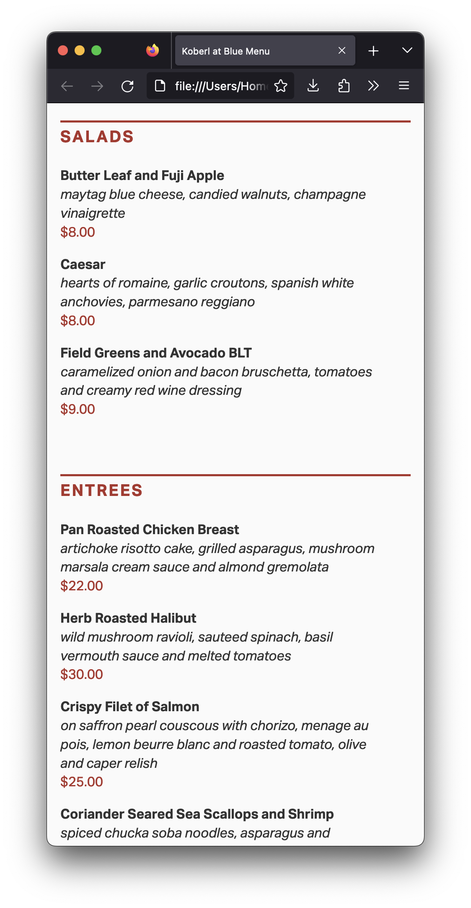

For this assignment, without changing its semantics, you will style your page from last week as close as possible to the screenshots below:

Start by reading my comments from the last assignment. Make sure to address every issue on it.
You will need these lines into your HTML file, between the <head> and the </head> tags:
<meta name="viewport" content="width=device-width, initial-scale=1.0">
<link rel="stylesheet" type="text/css" href="style.css">
The first line doesn’t allow the browser on mobile device to scale the layout down on small pages, keeping the type on a legible size, then. The second line is the link to the stylesheet in an external CSS file.
(I’ve been doing web design since the early 2000s, and I don’t think I’ve ever typed the lines above. I always, always, always copy and paste them. Why wouldn’t I?)
Make the necessary changes in your HTML to apply classes to elements or to span tags. By the way, always make sure to name your classes semantically (i.e. description and price, never italicred_type
Copy and paste this CSS file into a new CSS file on your computer.
Add My version of Eric Meyer’s Reset CSS tool to the top of your CSS document, so default margins and paddings won’t mess with your document’s style.
Replace all the _______ values with actual CSS values to their properties.
Make the layout as close as possible to my layout above.
Don’t use the b, i, em, or strong tags on your HTML. Don’t use any other tags to change the style in your HTML. And don’t use the style attribute in your HTML tags either. (If you don’t know what it means, don’t worry.) Keep all the style in the external CSS file.
For this assignment, use only serif or sans-serif for the font-family property.
You can make your browser window really narrow, to avoid worrying about other sizes. Even better, you can use the mobile built‑in simulator, also called User Agent, in your favorite browser.
You don’t need to make the content narrow for mobile. Make the browser window narrow instead. If you have your content narrow on a wide screen, you got it all wrong.
If you’re working on a Mac, you can use Apple’s Digital Color Meter that you already have installed in your computer. (On Windows, it’s not that straightforward, but you can always screenshot an image and open in Photoshop or even Microsoft Paint.)
Don’t forget: You want to work offline, saving your files on your computer and keep checking them on your browser Firefox. Only when you’re happy with the results that you want to upload to GitHub. You may change your mind and upload a new file, but what you don’t want is to work straight on GitHub.
You’ll be evaluated on your technical skills on the HTML and CSS files.
A common mistake is to change the markup for styling reasons.“I didn’t want indentation” or “I didn’t like the bullet points” are not valid reasons not to use lists or list items. Please check again a few tips about lists. And if it’s a list, keep the proper list and list items tags.
Avoid the same mistakes everybody makes.
When you’re done, use tools such as FreeFormatter, HTML Formatter, or Code Beautify to organize your HTML code. An organized code makes it easier for human beings to read, so you will be able to find mistakes easier, and it will be easier for me to grade your assignment too.
Publish your page on the URL username.github.io/grc338/restaurantmenucss
(It’s a different URL from last week. Always copy and paste from the assignment instruction to avoid typos and other mistakes.)
To make it work, you will need both the index.html and the CSS files published to the same restaurantmenucss folder in your GitHub repository.
You don’t need to submit anything to Canvas. Just click on your name to check if it’s working.
Check canvas for deadlines.